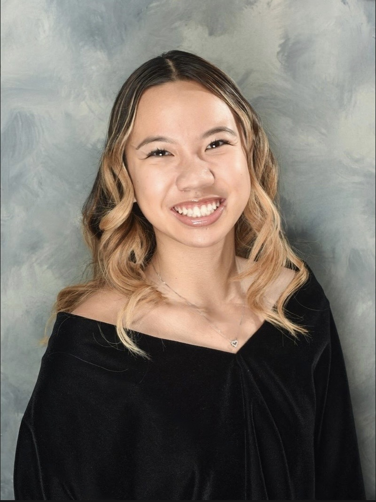
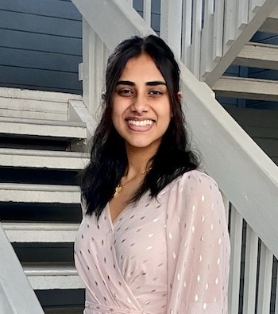
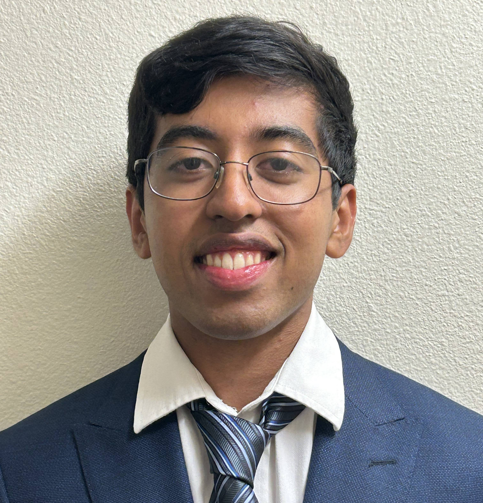
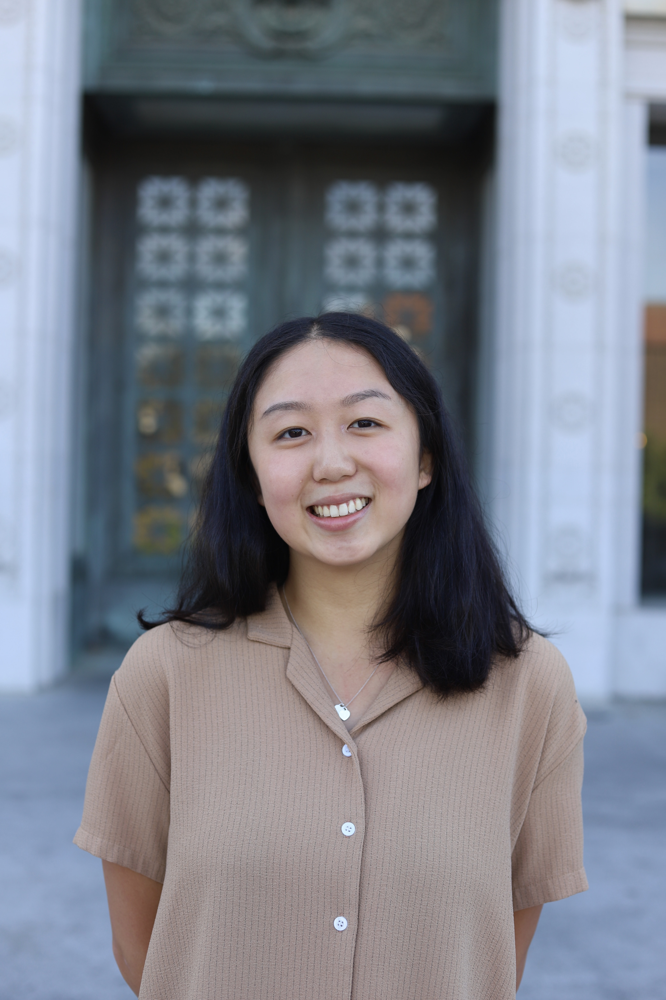
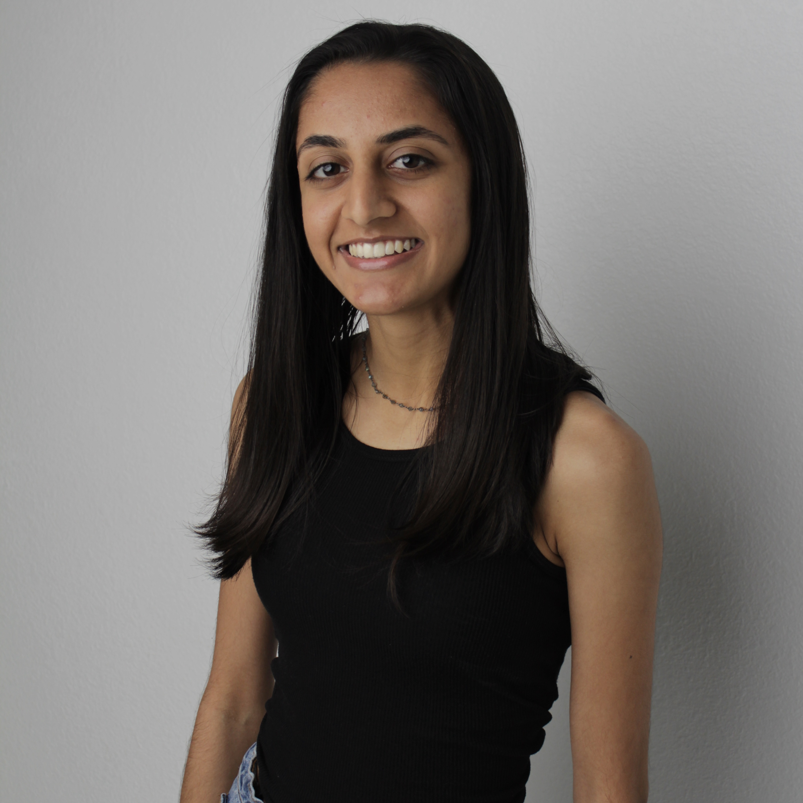
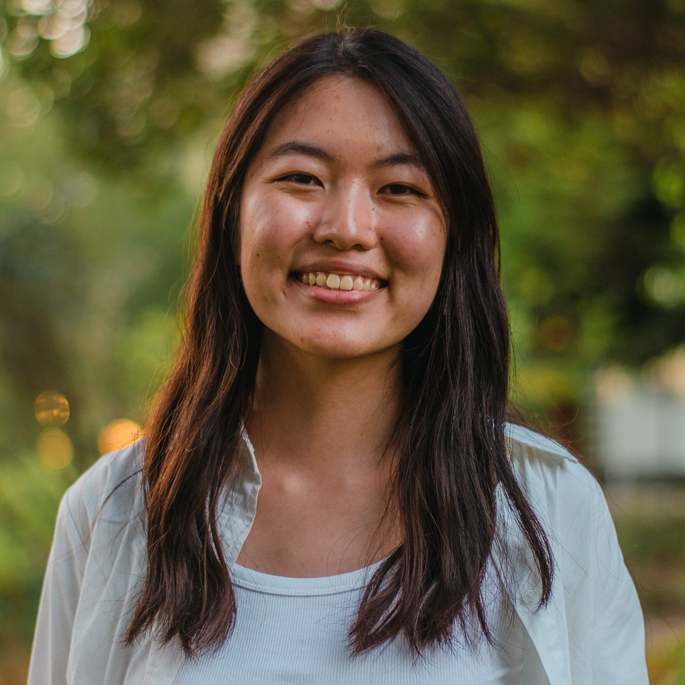

Meet the team
We're a group of UC Berkeley researchers passionate about innovating the future of chronic pain treament. Hover over each picture to learn more about us!
Timothy Brown, PhD
Principal Investigator
Timothy Brown
Timothy Brown, PhD, MA, is a health services researcher who has recently published work showing the specific biological, psychological, and social factors that predict future chronic pain; the causal impact of reductions in psychological distress in eliminating low back pain; and how discrimination can result in chronic pain. He is a faculty member in the Division of Health Policy and Management in the School of Public Health at the University of California, Berkeley.
Abigail Straight
Student Researcher
Abigail Straight
Abigail is a 4th year at UC Berkeley completing the Medical Biology and Physiology track within Cellular and Developmental Biology and Molecular and Cellular Biology major. She is passionate about equity and nuance within the spheres of science and healthcare, and is excited about including a mind-body and systems approach in her work. Abigail prioritizes time with family and friends, and enjoys live music, cooking, and being outdoors.

Allison Nguyen
Student Researcher
Allison Nguyen
Allison is a second-year undergraduate student at Berkeley studying Public Health and Molecular and Cellular Biology on the pre-medicine track. She is passionate about helping those with chronic pain, especially those who struggle with healthcare accessibility. In her free time Allison is always dancing, cheerleading, or baking.

Brian Song
Student Researcher
Brian Song
Brian is a first-year at Berkeley studying Electrical Engineering and Computer Science. He’s excited to explore the interdisciplinary bridges between computer science and other fields, such as public health. Witnessing technology amplify the potential impact of a study is a box he certainly intends to check off. In his free time, he loves to code and play baseball.
Ishita Srivastava
Student Researcher
Ishita Srivastava
Ishita is a third-year at UC Berkeley studying Molecular and Cell Biology, specializing in Neurobiology on the pre-medicine track. She is passionate about increasing healthcare accessibility as well as developing sustainable solutions for underserved populations. In her free time, you can spot her dancing, exploring scenic hikes or running with her dog.

Jasneet Bajwa
Student Researcher
Jasneet Bajwa
Jasneet is a 3rd year studying Molecular and Environmental Biology with a minor in Global Poverty and Practice at UC Berkeley. She is passionate about providing equitable access to healthcare especially to underserved communities. In her free time. you can spot her running around Berkeley, hiking, or watching anime.

Jude Alexis
Student Researcher
Jude Alexis
Jude is a first-year undergraduate at Berkeley studying Molecular and Cellular Biology with pre-med ambitions. With professional clinical experience, heavy technical exposure to CS, and a passion for ensuring the human good, Jude aims to be on the bleeding edge of the increasing digitization of medicine. In his free time he enjoys reading and playing chess.
Michael Yan
Student Researcher
Michael Yan
Michael is a second-year undergraduate at Berkeley studying Molecular and Cellular Biology with a minor in Public Policy. With professional interests in politics and health economics, he aims to pursue a career in health policy and clinical research as a physician-economist. Outside of academics, you can find Michael golfing on weekday mornings and singing as a true tenor.

Stephanie Lau
Student Researcher
Stephanie Lau
Stephanie is a second-year undergraduate student at Berkeley intending to pursue cognitive science. She’s interested in exploring the public health, policy, and advocacy fields in order to create a better world for those with chronic pain and health conditions. Outside of school, she enjoys art, reading, and live music.

Rupinder Dhaliwal
Student Researcher
Rupinder Dhaliwal
Rupinder is a senior undergraduate student at Berkeley studying Cognitive Science and Design. She finds the intersection between health, technology, and design fascinating. She has her associates in social and behavioral science and aspires to pursue a career, where she can help people and create innovative design solutions that prioritize accessibility. She is an avid latte drinker, likes dancing, and enjoys taking scenic walks out in nature.
Calista Oliveira
Student Researcher
Cindy Liu

Student Researcher
Megan Yip
Student Researcher